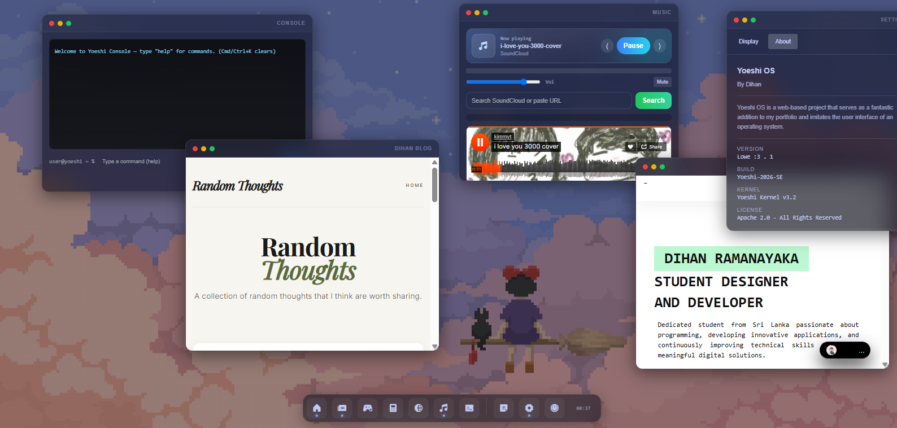

Featured
Chinese apps are better kinda,
Exploring a different digital world which people who live in china uses every day, by having a momment.
Read Now
06/19/2026
Issue #04 — 2026
A personal collection of essays, observations, and digital explorations worth sharing.
Exploring a different digital world which people who live in china uses every day, by having a momment.

From niche hobbyist playground to the engine of the modern internet, here is why Linux is having a moment.

Turning browser tabs into an advanture.
Understanding the emotional challenges faced by students in Sri Lanka and why mental health conversations matter more than ever.

Why cats feel deeply relatable to me and make me feel warmer and my perspective about cats and how they are deeply related to me.

Exploring the challenges and shortcomings of the Sri Lankan education system and its impact on students.